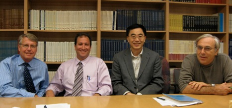

SURGICAL ENGINEERING ENTERPRISE (SEE)
SEE MISSION
Drexel University College of Medicine is developing a research and training program in surgical engineering, the Surgical Engineering Enterprise (SEE), as part of the five-year strategic plan.
SEE represents a collaboration among clinicians, scientists and engineers in the Drexel University College of Medicine, School of Biomedical Engineering, Science and Health Systems and the Drexel University College of Engineering. In conjunction with industrial partners, SEE seeks to develop a portfolio of cutting-edge, biotechnology-based surgical devices that will rapidly enter the surgical realm and enhance patients’ quality of life.
As a forward thinking initiative, SEE includes research and development, education and patrient-care components. SEE represents a prime example of translational biotechnology programs that draw on existing Drexel strength and is poised to propel the University into a leadership role within multiple arenas of surgical engineering.

The TEAM
As part of its Strategic Initiative, Drexel’s College of Medicine is developing a research and training program in surgical engineering, the Surgical Engineering Enterprise (SEE). Barry Waterhouse, Ph.D., Vice Dean for Biomedical Graduate and Postgraduate Studies, oversees and coordinates the activities of this program. The scientific director is Peter I. Lelkes, Ph.D., School of Biomedical Engineering, Science and Health Systems, Drexel University, and Departments of Pathology and Laboratory Medicine, Surgery and Biochemistry and Molecular Biology, Drexel University College of Medicine. Dr. Lelkes collaborates with Norman Johanson, M.D. and Frederic Kleinbart, M.D. of Orthopaedic Surgery, Ari Brooks, M.D., an Associate Professor of Department of Surgery, and Jack Zhou, Ph.D., an Associate Professor of Drexel’s Department of Mechanical Engineering and Mechanics.
SEE will establish Surgineering™ as a new interdisciplinary research program that focuses on the design and manufacture of advanced biotechnology-based smart surgical devices, implants, and tools, which will help the body to heal itself.
The project is distinct in its surgical outlook, in which the proposed goal-oriented research and its implementation are driven by the need for accelerated healing of some of the most frequent injuries to the musculoskeletal system. The unique environment at Drexel provides surgeons and other clinicians the opportunity to collaborate with engineers and biologists in the development of novel devices and minimally invasive procedures that aid in the diagnosis, treatment and repair of diseased or injured tissue.
The initial research goal of the Drexel Surgineering™program is to develop tissue engineering and biotechnology-based tools for regenerative joint repair, such as bioactive interference screws and porogen-based personalized bone constructs.
These surgical smart tools will aid in the repair and healing of some of the most common musculoskeletal problems, including anterior cruciate ligament (ACL) and rotator cuff injuries, as well as failed total joint replacements.
In addition to the lead research program focusing on biotechnology-based regenerative joint repair, the SEE initiative comprises a variety of educational and translational components, providing the blueprint for the development of other seminal advances in surgical care. Examples of current translational research collaborations include:
- Infrared Wound Healing Measurement and Ultrasound Therapy
- Drug Delivery Surgical Staple
- Nano Contrast Agents for Detection/Therapy of Ovarian Cancer
- Plasma Medicine Initiative
- Smart Mineralized Materials
- Porogen-Based Solid-Freeform Fabrication for Replacement Bones
- Biomedical Textiles for Wound Care
Drexel University College of Medicine departments collaborating on these projects include: Surgery, Biochemistry & Molecular Biology, and Orthopaedic Surgery.
SURGINEERING™
The design and manufacture of advanced biotechnology-based smart surgical devices, implants, and tools that will aid healing, reduce complications, and improve procedural accuracy and efficiency.
SEE POSTERS
- SEE Poster 2008 [pdf]
- Discovery Day 2010 poster by Qingwei Zhang [pdf]
- Ceramographic Competition 1st Place Award Poster during 111th Annual Meeting in Pittsburgh, PA, 2009 by Qingwei Zhang [pdf]
- SEE Poster 2010 [pdf]
Back to the top